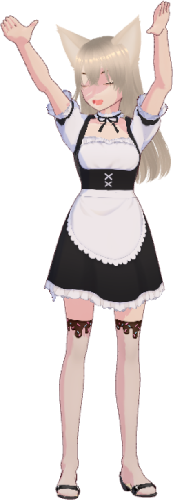
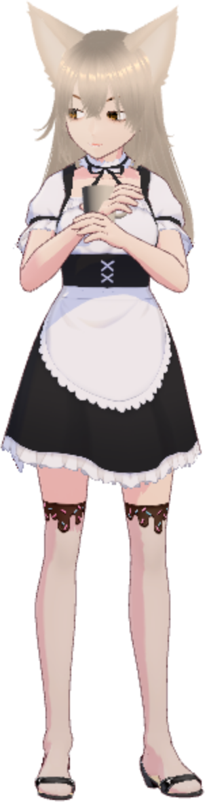
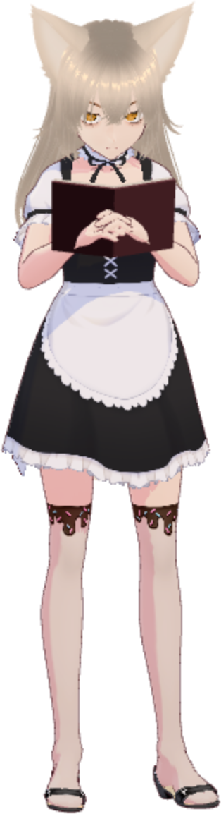

Живёт на панели задач и Lives on your taskbar and

3D-персонаж (любая модель VRM) ходит по панели задач, садится на окна, прячется за ними и делает дела на ПК по просьбе — голосом или в чате.
A 3D character (any VRM model) walks the taskbar, sits on windows, hides behind them, and gets things done on your PC — by voice or in chat.
Чат и голос: позовите по имени или зажмите клавишу. Имя и характер — ваши.
Chat or voice: call her name or hold a key. Name and personality are yours.
88 инструментов: программы, поиск, напоминания, заметки, музыка, файлы, экран.
88 tools: apps, search, reminders, notes, music, files, the screen.
Едет на окне, прячется, засыпает ночью, переодевается по погоде и сезону.
Rides your windows, hides, dozes at night, dresses for weather and season.
Шахматы, мини-игры, прятки за окнами, компаньон в Майнкрафте с модом «Глаза».
Chess, mini-games, hide-and-seek, a Minecraft buddy with the “Eyes” mod.
Это демо на сайте с заготовленными ответами. В программе отвечает настоящий ИИ — тот, который выберете вы, а характер вы задаёте сами (здесь — «колючая, но заботливая»).
A demo with canned replies. In the app a real AI of your choice answers, and you set the personality (here: “prickly but caring”).
Никаких подписок и аккаунтов. Программа ничего не отправляет разработчику — проверить можно по коду.
No subscriptions, no accounts. The app sends nothing to the developer — the code is there to check.
Ни аналитики, ни аккаунтов, ни автообновлений.
No analytics, no accounts, no auto-updates.
Бесплатный ключ NVIDIA или локальная модель: Ollama, LM Studio, llama.cpp.
A free NVIDIA key or a local model: Ollama, LM Studio, llama.cpp.
PowerShell, удаление и выключение — только если включите. Погасить экран она всегда спрашивает.
PowerShell, deleting and shutdown only if you enable them. She always asks before turning off the screen.
Голос и слух — модули по желанию, работают без интернета.
Voice and hearing are optional modules that run offline.


Установщик без прав администратора или переносная версия. Windows 10/11.
Installer without admin rights, or a portable zip. Windows 10/11.
Сборка не подписана, SmartScreen может предупредить: «Подробнее» → «Выполнить в любом случае». Почему так →
The build isn't code-signed, so SmartScreen may warn you: “More info” → “Run anyway”. Why →
Вся дорожная карта →Full roadmap → · Как всё устроено внутри →How it works inside →
Версия 0.9.2 целиком сделана по отзывам. Что вы написали и что я починил →
Version 0.9.2 was built entirely from feedback. What you wrote and what I fixed →